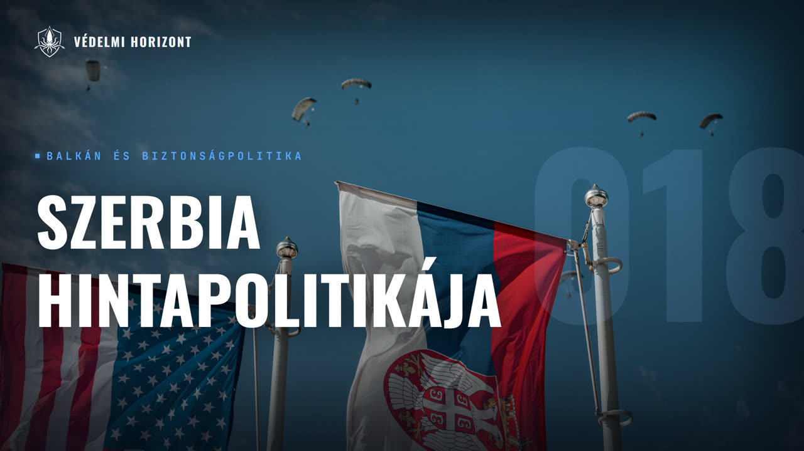

VÉDELMI HORIZONT #018 – SZERBIA ÉS A HINTAPOLITIKA A VÁLASZTÁS ELŐTT

Leírás
Résztvevők: Zsebeházy Bálint, Hegedűs István
Üdvözöljük a Védelmi Horizont kutatóműhely tizennyolcadik adásában!
Az adást a választás előtt, október 16-án rögzítettük. Vendégünk Hegedűs István, az NKE (Nemzeti Közszolgálati Egyetem) Biztonsági és Védelmi Politikai mesterszakának hallgatója, vajdasági magyarként belülről is ismeri a szerbiai helyzetet. Az újvidéki vasútállomás tragédiájától indulunk: hogyan lett ebből tiltakozási hullám, és miért nem alakult a diákmozgalomból hagyományos párt? Ezután az ideiglenes államfői státuszról és a személyi hatalom működéséről kérdezünk, majd azt vizsgáljuk, miért akadt el az EU-csatlakozás. Megnézzük, milyen eszközökkel van jelen Szerbiában Kína, Oroszország és az Egyesült Államok, mit jelent a NATO-val való együttműködés és hogyan alakul a szerb fegyverpiac. A végén azt kérdezzük: milyen forgatókönyvek várhatók a választás után, és mit jelentenek ezek a vajdasági magyarságnak?
Leirat beszélőnként
Üdv mindenkinek! Ez itt a Védelmi Horizont. Az a podcast, ahol diplomáciai, gazdasági, hadípari és biztonságpolitikai szempontok alapján nézzünk rá ugyanarra a témára, egyszerre, egy asztalnál. A mai témánk Szerbia jelenlegi helyzete és geopolitikai körülményei lesznek. A nevem Zsebeházi Málint, és most ketten ülünk a mikrofonok mögött. Velem szemben Hegedűs István, az NKA Biztonsági és Védelempolitikai Mesterszak hallgatója. Üdvözöllek!
Üdvözlök mindenkit és szia Bálint!
Szia István! Akkor nézzük is az első kérdésünket. Igazából itt az elején egy ilyen nagyobb bevezetőt jól lenne tartanánk, hogy tulajdonképpen hogy mik a mostani választásnak a körülményei. Ugye ez a parlamenti választás ez október 25-én vasárnap lesz. A mai dátum október 16-a, és majd szerben fog megjelenni az adás, szóval ezzel majd így kell számolni. Az elközelebb teltelő időt azt sajnos nem tudjuk feldolgozni, de igyekszünk minél aktuálisabbak lenni. Tehát konkrétan a két évvel ezelőtti november 1-i újvédekei tragédia hogyan alapoz meg ennek a választásnak? Hogyan megyünk neki ennek a dolognak most?
Hát igazából itt az újvidéki vasútállomás épületének az előttető omlása, Ez valójában nem csupán egy váratlan valaság volt a közvélemény szemében, hanem inkább a szerbiai közrend és a közállapotok elhanyagoltsága. Itt beszélhetünk rendszerszintű korrupcióról, átláthatatlan közbeszerzésekről, illetve a szakszerűtlen kivitelezésekről. És valójában a halálos áldozatok miatti gyász egyfajta politikai düvé alakult át, mert a társadalom az elszámoltathatóság teljes hiányát tapasztalta a hatóságok részéről. Így ez az egész katasztrófa a rendszerrel szembeni általános elégedetlenség katalizátorá vált, És egy nagyon komoly tiltakozási hullámot indított el. És valójában ennek köszönhetjük a mostani előre hozott választásokat. Magában az épületben kínai cégek meg a szerb alvállalkozóik dolgoztak. És a katasztrófa után az egyetemi városban a diákok kezdtek el először az utcára vonulva demonstrálni. Azonban ezek után igen hamar átcsapott egy általános korrupcióellenes megmozdulása, több mint 400 településen az országban. Itt a tüntető követelései közé tartozott a leszakadt teraszrenovációs dokumentációjának feltárása, az oktatási költségvetés nevelése 20%-kal, illetve a kezdeti tüntetés hullámban letartóztatott és bántalmazott diákok számára való igazságszolgáltatás. A rendőrség igyekezett és most is igyekszik megfékezni a tüntetőket, és több esetben sikerült túlságos erőszakosan föllépni a békés tüntetőkkel szemben. Továbbá a kormánypárti ellentüntetőkkel is többször összecsaptak a diákok. Ez az egész tüntetési hullám 2025. március 15-ére Belgrádban már egy olyan szintet ért el, hogy több mint 300 ezer ember ment ki az utcákra. És a beszámolók szerint ezen a napon este hétkor került bevetésre egy úgynevezett hangágyú. ami illegális Szerbia területén. Feltelhetően egy elred 450 akusztikus készülékről beszélünk, ami többek köztömegoszlatásra is alkalmazható. A bevetést követő pánik során több ember súlyosan megsérült, és egy ember halálosan meg is sérült. Az eset kivizsgálása céljából Bucsiti elnök az FSZB munkatársait kérte fel, hogy kivizsgálják az esetet, mint neutrális harmadik felet. Azonban az orosz nemzetbiztonsági szolgálat emberei nem találtak semmilyen hangányúra utaló nyomot, és jelentésük szerint a diákok egy megrendezett provokatív manővert hajtottak végre.
Értem, és neked vajdasági magyarként, ugye nem tudom pontosan, hogy mennyit jársz haza, de hogy hogyan csapódik le a környezetedben ez, vagy miket tapasztalsz, miket mondanak otthon?
Igazából nekem ez az egész Sokszor korosztályok alapján láthatunk megosztottságot, tehát az idősebb korosztály sokszor a kormánypárt és a haladók felé húz, azonban Azonban a fiatalok is meg vannak osztva. Aki egyetemista, ők jobbára a Vucic és a Srbska Naprednostránka, vagyis a szerb haladó párt ellen beszélnek, és igazából ők a diákok támogatói. És igazából ez a mostani szituáció, én ahogy látom, az egész társadalom nagyon meg van osztva. Tehát itt több évtized frusztrációja szabadult föl, és ez mutatja meg a jeleit ebben a szituációban. És igazából a Vucsics rendszere által nyújtott stabilitás már nem hoz annyi embernek beneficiókat, mint az elmúlt tíz évben.
És mivel magyarázható, hogy ezek a diák mozgalmak, ahogy itt te is mondtad, hogy ez több évtizednyi problémát ölel fel, vagy hogy annak a frusztrációja jelenik meg ebbe, Hogy gyakorlatilag nem tudnak pártát szervezni, vagy milyen problémái vannak ennek, hogy ebből szervezett mozgósítható intézmény legyen mondjuk, vagy bármi.
Igazából itt a diákmozgalom azzal őrizte meg a hitelességét, hogy tudatosan távolságot tartott a hagyományos és nagyon gyakran kompromittálódott ellenzéki pártoktól. Itt igazából a keleti orosz rendszer mását láthatjuk kicsiben, meg egy kicsit azért demokratikusabb módokon igazgatva. Ahol ugye az ellenzéki pártok nagyon sokszor csak ilyen látszatpártok és valójában a rendszer, a hatalmon lévő rendszer érdekeit szolgálják. Ezzel szemben a fiatalok egy hálózatos, alulról szerveződő és horizontális struktúrát hoztak létre, amiben nem az állami hírcsatornákat, hanem a közösségi médiát és a közvetlen kommunikációs csatornákat alkalmazták. Igazából ez egy nagyon rugalmas felépítéssel rendelkező rendszer lett ebből, ami megnehezítette a hatalom számára a mozgalom lefejezését, hiszen nem is volt hajlandó a mozgalom egy embert a Rivalda fénybe tenni, akit aztán a Az SNS kampány gépezete lejárathatna. És igazából A diákok egy úgymond diáklistát hoztak létre, ezt szerből Students' Calista-nak mondják. A Students' Calista egy olyan névsor, ahol olyan személyek vannak, akik például kiemelkedő szakértelemmel rendelkeznek, erkölcsös életvitelűek, büntetlen előéletűek és technokraták, tehát a studentscalista technokráciát szeretne kiépíteni, tehát hogy az emberek az érdemeik is a szakértelmik alapján kerüljenek hatalomba, ne politikai kapcsolataik révén. Nagyon fontos kritérium az, hogy a jelölt, aki a Students' Kalisztán szerepel, nem rendelkezhet bármilyen más párt tagságával, míg múlt időben sem. Ez véleményem szerint egy nagyon határozott rendszerváltó hozzáállás. Maga a lista 250 személyen rendelkezik. Ha jól emlékszem, legalább három magyar is van a lista tagjai között. A többiek prominens közéleti szereplőkből, egyetemi tanárokból és egyéb szakértőkből tevődnek össze. Maga a mozgalom igazából egy korrupció ellenes élel indult, azonban a Névsor bejelentésével szinte politikai pártként kénytelen állást foglalni és a szerb szavazótábor számára Nagyon fontos kérdések, mint például Koszovó, vagy az EU integráció, olyan kérdések, amik kihagyhatatlanok. És ez a szituáció valójában problémát is jelent az egész mozgalom számára, mert maguk a diákok között is több frakció van, amik eltérő véleménnyel rendelkeznek. Tehát néhány ilyen tömrülés esetében nagyon erős nacionalizmusról beszélhetünk. Például a Vidovdan, vagyis Szent Vitus napja alatti demonstrációkon nagyon határozottan kiálltak Koszovó nem elismerése mellett, ami megnehezíti a liberális és Európa párti ellenzéki pártokkal való tartós szövetséget. Ennek ellenére több ellenzéki vezető is kiállt mellettük, például Dragán Gyilasz, az SSZP vezetője, vagy Zdráko Pónos, a SZRCE vezetője. Noha itt a koordináció azért gyakran akadozik az ideológiai különbségek miatt.
És mit jelent pontosan az, hogy most ideiglenes államfő van Szerbiában ez hogyan működik ez a tisztség? Mit jelent az államfő, a miniszterelnök? Ugye lehet a magyar hallgatóknak kicsit más kép van a fejében ezeknek a fogalmaknak hallatán. Szerbiában ez hogy működik pontosan? És hogy mik voltak ennek az ideiglenes államfő jelölésnek a különbényei?
Igazából jelenleg Alexander Vucsic elnök lemondása után Ideiglenesen a Skubstina, tehát a parlament házelnöke vette át az elnöki pozíciót. Azonban ez nyilván csak egy átmeneti szituáció. És valójában neki ki kell írnia a választásukat három hónapon belül. Ez meg is történt, tehát itt törvényes eljárásról beszélhetünk. És valójában Bucsic célja ezzel a lemondással szerintem az volt, hogy még van támogatottsága az országban. Két év múlva már nem biztos. Elméletben 2027-ben kellett volna, hogy lejárjon a mandátuma. Tehát inkább másfél évről beszélhetünk, de akkor is. Valójában ő itt egy nagyszabású hatalomtechnikai manővert hajtott végre. Ő miniszterelnök szeretne lenni a választás után, és ezzel ugyanígy a kezében tudná tartani a végrehajtói hatalmat. Ugyanis a szerbiai politikai rendszer, mint olyan, az úgy működik, hogy személyi hatalomról beszélhetünk. Tehát az állami tisztségtől függetlenül az úgymond erős ember, a vezető hozza meg a döntéseket. Ez nem a demokratikus intézményrendszerhez tartozik. Ez a fajta hatalomgyakorlási modell egyébként tükrözi az oroszországi federációban alkalmazott módszert. Felhoznám itt példának Vladimir Putyin 2008-as Elnöki mandátumának a végét, amikor is megszűnt elnök lenni, egyik közeli szövetségését, Dimitri Medvegyevet ültette az elnöki székbe. A Balkánon beszélhetünk Milorát Dodikról, aki a Bosnia-Hercegolynai Szerbentitás, a Bosniai Szerb Köztársaság, tehát Republika Srpska nagyon régóta hivatalban lévő elnöke. Tavaly télen egy elfogadóparancs és nemzetközi nyomás miatt átadt a tisztségét egy hozzá közelálló munkatársának, Szinise Karánnak. Ugyanez megfigyelhető Montenegroban, ahol Milo Djukánovics elnök vezetett három évtizedig, azonban felváltva játszott a miniszterelnöki és az elnöki székekkel.
Jó, akkor a következő blokkra szerintem át is térhetünk, mert mégiscsak nagy rész külpolitikával, biztonságpolitikával foglalkozunk a csatornán, podcastben. Nézzük meg most a Brüsszel való kapcsolatát Szerbiának. Ugye 2021 óta egyetlen új tárgyalási klasztár sem indult. Miért van ez? Miért akadtak el a gépezetek?
Valójában a stagnálás háttereben itt az EU és Belgrád növekvő ideológiai és geopolitikai szakadéka áll, tehát Brüsszel egyre szigorúbban kéri számon a jogállamisági reformok elmaradását, a bíróságok függetlenségének a hiányát és a sajtószabadság erős korlátozását. Emellett magát a csatlakozási folyamatot teljesen befagyasztja az a tény, hogy Szerbia mereven elutasítja az Oroszország elleni Európai Uniós szankciók áthitelét, És nagyon sajátos Moszkvával ápolt kulturális és baráti kapcsolatokat ápoló külpolitikát folytat. Nyilván ez itt Koszovó kérdésében is érdekes, és egy ilyen szituációban is ezt Szerbiának döntésre kell jutnia ezzel a kérdéssel kapcsolatban. Azonban a szerb választópolgárok Egyelőre még úgy tűnik, hogy nem hajlandóak elengedni Koszovót.
Igen, és... Egyébként mondhatunk egy ilyen arányt, hogy mi az, ami, tehát mondtad a szankciókat, hát van egy ilyen politikai ütközés, meg van egy ilyen jogállamisági ütközés, hogy ezek mekkora súlyban érvényesülnek itt az érvelésekben? Tehát, hogy inkább ez, vagy az, vagy egyenlő, vagy mindkettő borzasztó akadályt jelent?
Hát valójában itt mind a kettő egy nagy akadály. Személyes véleményem szerint itt igazából a Koszovó kérdés jelent nagyobb problémát, meg a választások eredménye is ezt el fogja dönteni. Hogyha a studentska lista fogja megnyerni a választást, akkor beszélhetünk egy Oroszországtól való eltávolodásról az EU irányába. Ha pedig az SNS fog győzni, akkor valószínű, hogy egyfajta további hintapolitikát fogunk tudni megfigyelni.
És magában a szerb társadalomban egyébként mennyire Erős az a cél, vagy mennyire szeretnének EU-sok lenni? Tehát itt azt is felvetetted, hogy ugye van egy ilyen generációs ütközés, különbség. Most ebből azt feltételezem, amit így mondtál, hogy a fiatalok jönnének, az idősebb generációk pedig az EU-n kívül maradnának inkább.
Többé-kevésbé így van. Egy 2026 júniusi felmérés szerint a lakosságnak csupán úgy egy harmada támogatja az EU tagságot. Itt a többség mondjuk egy 58% Oroszországban és Kínában bízik. Itt az EU elvárásai, az orosz szankciók, Kosova elismerése, hogy összeegyeztethetetlenek a szerbbel politikai realitásokkal, és ez eredményezi a mostani padhelyzetet. Úgymond a szerb társadalom körében egy bővítési fáradtságról beszélhetünk, ugyanis az egész EU integrációs folyamat Folyamatos elhúzódással egyfajta csalódottságot kelt az emberekben, és drasztikusan lecsökkent az EU csatlakozásba vetett hit, és azt én saját személyem is tapasztalja, hogy ha akármikor szóba jön így egy beszélgetés folyamán az EU csatlakozás, akkor többség csak legyént. Tehát az elkövetkezendő 5-10 évben a legjobb esetben is szkeptikusak az emberek.
Tehát akkor ugye említetted Oroszország és Kína befolyását. Pontosan milyen eszközökkel él Moszkva és Peking, hogy így magánál tartsa Szerbiát maga mellett?
Kína főleg gazdasági eszközökkel igyekszik fenntartani a befolyását, tehát hatalmas beruházásokat végez az országban. Ahogy a beszélgetésünk elején említettem, az újvidéki vasútállomás felújítása is az ő érdemük. Továbbá az egész ország vasútinfrastruktúrájának a megépítésében nagyon erősen benne voltak. Nem tudom, hogy teljesen kedves hallgatók tudják-e, de a Budapest-Belgrád vasútvonal megnyitása az most már pár hónap kérdése, és ez is teljes mértékben kínai vállalkozás. Nem teljesen, de nagyrészt. Kína főleg így próbálkozik, Moszkva talán a gazdasági képességeinek hiányában egyéb eszközöket is bevet, és a softpowert szerintem nagyon hatékonyan és professzionális módon alkalmazza. Itt beszélhetünk kiterjedt orosz barát média kampányokról, Nagyon aktívan ápolja az ortodox egyházi és kulturális kapcsolatokat, a közös történelmi múltra hivatkozva, hasonló nyelvre hivatkozva, ösztöndiakat indítanak, stb. stb. Emellett diplomáciai védelműt tart fenn Szerbia felett a nemzetközi fórumokon. Támogatja a koszovói kérdésben. Oroszország a ZENSZ biztonsági tanácsban Szerbia legnagyobb támogatója a koszovó kérdésében és egy ilyen szintű diplomáciai gesztust nem fog elfelejteni a Balkáni ország. Mindemellett valamennyire hardabb Power eszközöket is alkalmaz. Nemzetbiztonsági szervek útján is nagyon effektív módon tudja fenntartani a kontrollt Szerbiában. Példának felhoznám a 2025. március 15-ei hangágyúbevetést. Amikor megállapították, hogy semmi probléma nem történt a demonstráción, azonban egy kicsi erősebb gesztus volt a részükről, ami nem hivatalos, de ugyebár Szerbia elméletben Közvetítőkön keresztül többször is adott el Ukrajnának lőszert és fegyvereket. Oroszország erre idővel természetesen rájött, és miután Szerbia többszörös diplomáciai felszólítás után sem volt hajlandó megakadályozni, hogy az ő fegyverei Ukrajnába jussanak, 2025 nyarán a Vajobóban Az ország egyik legnagyobb lőszergyárában egy robbanást követően több mint öt ember megsérült. Ezek után Szerbia leállította a fegyverexportjának egy nagyon jelentős részét, és ugyanez hivatalosan nem köthető Oroszországhoz, azért az egybeesések szerintem nagyon egyértelműek.
Akkor ugye, de itt amerikai befolyásra is beszéltünk, olyan szempontból, hogy amerikai szankciók miatt a szerb olajipari társaság orosz olajdonságnak ki kellett szállniuk. Ez mit jelent pontosan a gyakorlatban egyébként az orosz befolyásra nézve? Vagy ez mennyire súlyos ütés nekik?
Igazából ez Oroszországnak elég nagy ütés, hiszen főleg az energia segítségével próbálja kontrollálni a hozzátartozó úgymond proxy államokat, és hogyha az eszközét elveszik tőle, akkor már csak a soft power és a nemzetbiztonsági Per fél illegális akciók maradnak számára. Viszont az orosz-ukrán konfliktus miatt egyszerűen nincs kapacitása minden fronton megőrizni befolyását, és Amerika ezt az űrt tölti be.
Igen, és ebbe az orosz-ukrán viszonyba ugye még Zelenszkij-Vucsis csal való találkozása is bejöhet, tehát azt hiszem a Kárpátok nyolcas találkozón egyébként a Vucsis is rész vett. És ez hogyan? Ez mit jelent pontosan? Tehát ebben ilyen Nagyon pragmatikusan van ott Szerbia, vagy ez valamiféle értékrendet is kiválthat?
Valójában ez az egész Ez az egész találkozó és maga diplomáciai meeting egy komoly üzenet a Nyugat számára és Oroszország számára is, mert ez egy stratégiai eltávolodást jelez. Tavaly előtt ilyenkor ez még elképzelhetetlen lett volna, Pont Szerbia elnöke fogadja a sárga-kék díszk kísérettel az ukrán elnököt, azonban 2026-ra már megtudták lépni ezt a lépést. Nyilván ennek a belpolitikai helyzet is kiváltó oka. Ugyanis Bush így próbálja fenntartani az eddig sikeres hinta politikáját, amikor is a nyugat és kelet között próbál egyensúlyozni. Viszont egy nyugat relatív nyugatbarát és valamennyire liberális értékeket valló nagy ellenzéki megmozdulás Meg kell mutatnia, hogy ő is egy nyugat párti és Európába integrálódni akaró aktor. Így ez egy nagyon erős üzenet volt. Egyébként ezek az ukrán fegyverüzletek is. Hivatalosan azzal védekezik Szerbia, hogy Ő nem tudja kontrollálni, hogy ki lesz a végfelhasználója az ő fegyvereinek, hiszen ezek a fegyverek Csáhországon, Lángyelországon, Bulgárián vagy akár Törökországon keresztül jutnak el Ukrajnába. Azonban a valóság az az, hogy itt pontosan legtöbb esetben tudják a szerbek, hogy kinek és mit adnak el. Vannak erre legális és illegális módszereik is. Egyfajta szürke zónában nagyon effektíven tudnak operálni a szerb fegyverkereskedők.
Értem, akkor nézzünk meg egy másik katonai szempontot, itt a NATO kapcsán és a NATO-val való kapcsolata Szerbiának. Ugye Szerbia 2006 óta katonai ksemleges és részt vesz a NATO békepartnerségébe. Ez gyakorlatilag mit jelent?
Igazából a békepartnerségben való részvétel Szerbiának lehetővé teszi, hogy közös katonai gyakorlatokon, tisztíkképzéseken, humanitáris és katasztrófa védelmi programokon vegyen részt nyugati partnerekkel. Ez valójában fenntartja a fegyveres erők technikai interoperabilitását. És a modernizációs lehetőségeit, anélkül, hogy Belgrádnak fel kellene adnia a hivatalosan hirdetett katonai semlegességet. Ha egy kicsit a színfalak mögé nézünk, akkor igazából nem sok kutatás szükségeltetik hozzá, hogy felfedezzük, hogy Az utóbbi 10-20 évben nem Oroszország és nem Kína a Szerbia legnagyobb katonai partnere, hanem a NATO. Ebben az időintervallumban Az ország hadgyakorlatainak több mint 50%-a NATO országokkal történt meg. Sok esetben történt fegyvervásárlás NATO országoktól, és igazából sok esetben pedig ajándékban is kapott Szerbia NATO fegyvereket. Tehát ez egyáltalán nem elhagy a Golandó kooperáció.
Igen, a fegyverüzetekre még visszatérünk később, de akkor gyakorlatilag, mert ugye ezek, tehát ezek a hadgyakorlatók meg fegyverálladások, ezek egy egész magas bizalmi szintet Betítenek előre, hogy hát én most kicsit vagy ugye ilyenkor jön ki, hogy a nemzetközi politika az nem fekete-fehér, hanem sokkal inkább ilyen szürke, a szürke árnyalatait tükrözi valójában. És például a K4, hogy miért éppen Belgrade az, aki változatlan létszámmal az egyik leghangosabb támogatója ennek. Ez is egy érdekes része lehet ennek.
Igazából ez először paradox dolognak tűnhet, hiszen a KFOR egy NATO-s békemisszió, és a NATO volt az, aki 1999-ben nemcsak hogy lebombázta Szerbiát, hanem egy nagyon komoly és extenzív több hónapos bombázókampányt hirdetett az ország ellen. Ahol bizony igen sok szerb meghalt és az infrastruktúra olyan károkat szenvedett, amiket a mai napig nem hevert ki teljesen az ország. Viszont hogyha egy kicsit pragmatikus és talán cinikus szemüvegen átnézzük ezt az egész szituációt, akkor rájövünk, hogy a KFOR Az a koszovói szerb kisebbség fizikai túlélésének az utolsó garanciája. Szerbia és a szerb vezetés attól tart, hogy a nemzetközi erők kivonása azonnal egy etnikai tisztogatáshoz vezetne, vagy a koszovói albánhatóságok teljes ellenőrzéséhez. Így a KFOR jelenléte egy létfontosságú biztonsági fék.
Én most kigyűjtöttem adatokat. Itt az elmúlt 10 év fegyver leszállításainak a 46%-a Kínából, 28%-a Oroszországból és olyan 9%-a Franciaországból érkezett. Ugye ez a top 3, többiek ilyen 3-4%-okon vannak. Hogyan látod ezt? Ugye ez itt egy nagyon erős kínai elhatárolódást mutat. Ez miért lehet így?
Igazából ennek az egésznek hidegháborús alapokra visszamenő okai vannak, hiszen a mai Szerbia a volt Jugoszláviától örökölte meg a fegyvereinek legnagyobb részét, ami Többé-kevésbé interoperabilis volt a szovjet fegyverekkel, tehát ebből következően a mai orosz fegyverekkel is interoperabilis. Itt nagyon sokáig az Oroszországi Federáció volt a szerbiai fegyverimport legnagyobb eladója, azonban ez az orosz-ukrán konfliktus kitörésével Igen nagyot változott. Most már Oroszország nem engedheti meg magának, hogy piacra dob olyan eszközöket, amire neki magának is szüksége van, sőt, hiányokat szenved belőle. Azért még beszélhetünk, Beszélhetünk orosz fegyverrendszerekről, például az S-400-as rendszerről, vagy az S-300-ról. Azonban egyre inkább Kína kezdi kitölteni el ezt a részt. Részben ez van az Amerika szkepticizmusnak köszönhető, Részben pedig az, hogy a kínaiek is azért elég komoly hidegháborús, szovjet mintájú fegyverekkel és fegyverrendszerekkel rendelkeznek, és most már pedig megvannak a saját fejlesztéseik, amik önállóak, és ezeket kedvező áron tudják Szerbiának eladni. Több esetben is beszélhetünk arról, hogy Létesítettek szerb területen kutatóbázisokat, fejlesztőműhelyeket, ahol többek között rakétákat és drónokat fejlesztenek kínai és szerb tudósok együtt. Általában ezeknek a struktúrája úgy néz ki, hogy 51%-ban kínai tulajdon, 49%-ban szerb, vagy éppen fordítva.
Igen, amúgy ez is érdekes ugye, hogyha ilyen katonai meg fegyverrendelési statisztikákat nézünk, hogy ugye nagyon ki tud lőni, hogyha egy darab vásállás van, de az nagyon magas értékű, akkor ez ki tud lőni a statisztikában is. És kicsit akkor, most itt ezt látom amúgy Franciaországnál is, hogy 12 darab RAFA vadászgépnek a vásállása az már kb. Erre szánt pénzeknek a 10%-a körül van. Sokan szoktak úgy hivatkozni a Rafára, meg hasonlóan a Gripenre is, hogy ez igazából azt jelenti, hogy az adott ország nem akar elhatárolódni Moszkva vagy Washington felé, hanem egy ilyen middle ground-ot keres, Milyen fegyverrendszert tud vásárolni? Mennyire látod, hogy ez mennyire illeszkedik bele a szerb vásárlás az ilyen általános trendbe kapcsán?
Hát itt igazából Szerbiának és Franciaországnak egyébként vannak bizonyos szintű pozitívnak mondható történelmi kapcsolatai. Szóval én nem lepődnék meg, hogy pont a franciákat választották, főleg az amerikaiakkal szemben. Azonban akkor is ez egy nagyon komoly történelmi szintű elmozdulás. Itt igazából a pénzügyminiszter Szini Semali bejelentése szerint a szerb fenyveres erők történetének eddigi legnagyobb, összesen 2,7 milliárd eurós beruházása keretében Belgrád 12 darab Rafalt vásárolt. Ezeknek a leszállítása 2028-ban kezdődik. Itt igazából magához a projekt finanszírozásához is Francia Banktól vettek fel kölcsönt a szerbek. Ez egy 2,2 milliárd eurós hitelcsomag. És itt a vezető Francia Bank a Credit Agricole. Bocsánat, az undorít a francia kiejtésemért, de sajnos soha nem tanultam. És igazából Szerintem ez nem a régi Antonov AN-26-osok lecserélését jelenti, hanem egyértelműen jelzi a nyugat irányba való közeledést. Egy ilyen fegyvervásárlás nagyon sokszor diplomáciai eszközként is használnak, és egyébként főleg a szermek. Ez miatt Az interoperabilitási kérdések nem mindig könnyen megoldhatóak, ugyanis a politika, a diplomácia hoz egy döntést, megvesznek egy fegyverrendszert, és utána a szerb haderőnek kell ezzel feltalálnia magát és kihozni belőle a legjobbat.
És hogy áll ugye most nagyon trendy a drónok, meg a drónoknak a felhasználása a hadseregben? Ezzel Szerbia hogy áll?
Szerbia igazából főleg a kínaiakkal együtt szokott a drónokat fejleszteni. Sőt, kínai csúcstechnológiáról beszélhetünk. Igyenkeznek saját fejlesztéseket is végrehajtani. Beszélhetünk a szerb légvédelemről is, mint olyan. Ennek a gerincét is a kínai technológia biztosítja. Tehát 2007 és 2018 között Kína 5,2 millió dollár értékű katonai támogatást nyújtott Szerbiának. 2017-ben Vucsic elnök személyesen tárgyalta a kínai Poly Group Corporation elnökével. Beszélhetünk még terror elhárító felszerelésekről, éjjellatú készülékekről. Ez a kooperáció enyelőre nem valósult meg, viszont maga a párbeszéd elindított egy hat darab CH-92A. Drón beszerzéséhez, ami 2018-ban meg is történt, és ezzel Szerbia lett az első állam a világon, amely Kínától vásárolt fegyveres drónokat. Ez mellé vettek még azt hiszem 18 darab lézervezélésű FT-8C rakétát is. És az egészet kiegészítették egy olyan technológiai megegyezéssel, amelynek keretében a kínai mérnökök segítséget nyújtanak a hazai Pegas drón kifejlesztéséhez. Emellett a szerbek a Kínáról megvásárolták még a HQ-22-es légvédelmi fegyverrendszert, Amit egyébként a szervek nagyon pozitívan fogadtak és több beszámoló szerint kifejezetten tetszett nekik.
Akkor most már lassan elkezdünk a podcast végéhez közeledni. Most már átérnék így a jövőbeli kitekintésekre, kilátásokra. Tehát az első kérdésem, ezt már kicsit pedzégettük az elején, de hogy ugye a választásokra visszatérve, hogy milyen külpolitikai irány valószínű egy kormánypárt győzelme esetén, illetve egy ellenzéki vagy diák mozgalomból kinövő kormány esetén.
Ha és amennyiben az SNS győz, Akkor itt az eddig bevált hintapolitika folyása az tovább várható. Főleg arra próbálnak fókuszálni, hogy az EU-s pénzeket fel tudják venni, de emellett szoros gazdasági kapcsolatokat ápoljanak Kínával és Oroszországgal. Igyekeznek nemzetközi támogatást szerezni ehhez a Ehhez a győzelemhez és a saját maguk validációjához valójában még azért nem buktak meg, Mert a nyugat sem támogatja teljes szívvel a diák mozgalmakat. Ugyanis a diák mozgalom sokkal kaotikussabb módokon működik, és valamilyen szintű bizonytalanságot fog hozni az országba. És nyilvánvaló módon Kína és Oroszország a jelenlegi vezetést preferálja, de még az EU is Értékeli a stabilitást, amit nyújt Vucsic és Szerbia. Még akkor is, ha nem mindig az ő érdekeiknek megfelelően dönt, de valamilyen szintén kiszámítható. Ellenzéki győzelem esetén Egy határozott nyugati orientációról beszélhetünk. Itt megpróbálják majd a jogállamisági reformokat felgyorsítani és az uniós csatlakozási fejezeteket megnyitni. Miután, mint már többször említettem, az újdéki vasútállomást kínai vállalkozók Építették így a Pekingel való kapcsolat valamilyen szintű megromlására számíthatunk és hasonlóról beszélhetünk. Oroszország esetében bár ott ez az eltulódás nem lesz ennyire markáns, mert azért a szerb néplélek még továbbra is úgymond értékeli az orosz kapcsolatot és nagyon fontosnak tartja a közös vallási és kultúrális, illetve nyelvbéli hasonlóságokat. Azonban mindenképpen egy nyugat felé való orientációról beszélhetünk.
És mikor kényszerülhet Belgrád végleges választásra, hogy vagy nyugat, vagy Moszkva, vagy ez nagyon ilyen szürke igazából? Nem tudom, hogy minek kéne ahhoz történnie.
Valójában egy ilyen egyik napról a másikra történő állásfoglalást nem tartunk elképzelhetőnek, tehát ez egy Ha meg is történik egy ilyen állásfoglalás, az egy graduális folyamat lesz, tehát egy vagy két éven belül működik ez. Mindenképpen egy kényszerhelyzet hatására. Tehát ha és amennyiben ez a többirányú hintapolitika tovább folytatódik, akkor ha Oroszország úgy dönt, hogy megszorítja, megszorításokat tesz az energiaügyben, Akkor jobban ezzel a markában fogja tartani Szerbiát. Hogyha pedig a szerb nép nagyon úgy érzi, hogy az Európai Uniós ultimátumokat tovább nem bírja, akkor idővel arra fog kényszerülni, hogy állást foglaljon az egyik hatalmi tömb mellett. Közeljövőben nem fog ilyen meredéken megtörténni, tehát mindenképpen egy graduális változás lesz itt.
És mit gondolsz, hogy a vajdasági magyarságra milyen hatással lehetnek a különböző szenáriók?
A vajdasági magyarság mint olyan, Egyfajta híd szerepet tölt be Magyarország és Szerbia között, tehát én úgy nevezném magunkat, hogy egy közvetítő szerepet játszunk. A szerbiai politikai stabilitás változásai közvetlen hatással vannak. a vajdasági magyarságra és a mi biztonságunkra, az egzisztenciára és a kisebbségi jogok érvényesítésére. A Vajdasági Magyar Szövetség eddig koalícióban volt a szerb haladó párttal. Most már úgy tűnik, hogy ez a koalíció minden esetre megkérdőjeleződik, ugyanis érzik, A WMS érzi a Szerbiában uralkodó állapotokat és azt is látja, hogy ez egy nagyon szoros választás lesz, tehát valószínűleg azzal a párttal fog koalícióra lépni, aki megnyeri a választást. Ezzel szemben a vajdasági magyar újrakezdés vagy a vajdasági magyar plénum Ők igazából az április 12-i magyarországi választásuk után lettek prominensebb pártok, tehát az utóbbi mondjuk fél évben beszélhetünk a VMSZ-en kívüli gazdagabb politikai életre a vajdasági magyarság körében, és Ezek az újabb, fiatalabb, kisebb pártok inkább a diákok mellett vannak. Tehát ők eddig azért nem emelkedtek föl, mert a VMS koalícióban volt a szervhaladó párttal. Mindenesetre abban egyetértenek, A vajdasági magyarság nem akar semmiféle szeparáltista mozgalom arcává válni, semmilyen fegyveres konfliktusba nem akar belekeveredni, hanem továbbra is demokratikus úton koexisztenciát választják.
És mikre érdemes majd odafigyelni a választásokon kívül, vagy a választások után következő hetekben, hónapokban? Miket olvassanak a hallgatók, hogyha jobban érdekel őket a téma? Hol tudnak tájékozódni? Milyen jeleket, milyen számokat érdemes nézniük?
Igazából itt így most két legegyszerűbb, hogyha vajdasági irodalmat szeretnének fogyasztani, akkor a Magyar Szó és a Szabad Magyar Szó. Talán a két legismertebb hírportál így a vajdaságiak körében. Ami magyar nyelven működik. Beszélhetünk még például a Délhír portálról, stb. Azonban, hogyha a hallgatók esetleg szeretnek angolul idegen nyelven tájékozódni, akkor mindenképpen a Balkan Investigation Report Network-ot ajánlom, rövidítve BIRN, vagy a CRIC ami egy oknyomozói portál, esetleg még a Balkan Insight. Ez a három valójában nekem a személyes kedvencem. Mindenesetre elég sok más portál is van, de én ezeket szoktam legnyakrabban követni.
Hegedűs István, köszönjük szépen, hogy a vendégünk voltál.
Én köszönöm, hogy eljöttem.
Ezzel a mai adás végéhez értünk. Köszönjük, hogy velünk tartottak! Ha hasznosnak találták az elhangzottakat, iratkozzanak fel a csatornánkra, kövessék a Védelmi Horozontot Spotify-on és a közösségi felületénken, és írják meg hozzászólásban, melyik témát dolgozzuk fel a következő adásokban. Minden héten új adás alján kezünk. Ha kérdésük, észrevételük vagy témajavaslatuk van, írjanak nekünk a védelmi.horizont.gmail.com címre. Védelmi Horizon nevében köszönjük a figyelmet és találkozunk a következő adásban.
A leirat gépi hangfelismeréssel készült, ezért tartalmazhat apró pontatlanságokat.